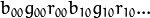
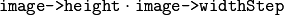
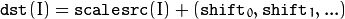
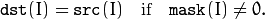
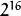
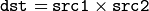
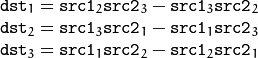
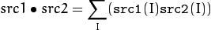
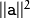
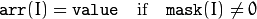

Basic C Structures and Operations¶
The section describes the main data structures, used by the OpenCV 1.x API, and the basic functions to create and process the data structures.
CvPoint¶
-
C:
cvPoint(int x, int y)¶ constructs
CvPointstructure.
-
C:
cvPointFrom32f(CvPoint2D32f point)¶ converts
CvPoint2D32ftoCvPoint.
-
struct
CvPoint¶ 2D point with integer coordinates (usually zero-based).
param x: x-coordinate of the point. param y: y-coordinate of the point. param point: the point to convert.
See also
CvPoint2D32f¶
-
C:
cvPoint2D32f(double x, double y)¶ constructs
CvPoint2D32fstructure.
-
C:
cvPointTo32f(CvPoint point)¶ converts
CvPointtoCvPoint2D32f.
-
struct
CvPoint2D32f¶ 2D point with floating-point coordinates.
param x: floating-point x-coordinate of the point. param y: floating-point y-coordinate of the point. param point: the point to convert.
See also
CvPoint3D32f¶
-
struct
CvPoint3D32f¶ 3D point with floating-point coordinates
-
C:
cvPoint3D32f(double x, double y, double z)¶ constructs
CvPoint3D32fstructure.Parameters: - x – floating-point x-coordinate of the point.
- y – floating-point y-coordinate of the point.
- z – floating-point z-coordinate of the point.
See also
CvPoint2D64f¶
-
struct
CvPoint2D64f¶ 2D point with double-precision floating-point coordinates.
-
C:
cvPoint2D64f(double x, double y)¶ constructs
CvPoint2D64fstructure.Parameters: - x – double-precision floating-point x-coordinate of the point.
- y – double-precision floating-point y-coordinate of the point.
See also
CvPoint3D64f¶
-
struct
CvPoint3D64f¶ 3D point with double-precision floating-point coordinates.
-
C:
cvPoint3D64f(double x, double y, double z)¶ constructs
CvPoint3D64fstructure.Parameters: - x – double-precision floating-point x-coordinate of the point.
- y – double-precision floating-point y-coordinate of the point.
- z – double-precision floating-point z-coordinate of the point.
See also
CvSize¶
-
struct
CvSize¶ Size of a rectangle or an image.
-
C:
cvSize(int width, int height)¶ constructs
CvSizestructure.Parameters: - width – width of the rectangle.
- height – height of the rectangle.
See also
CvSize2D32f¶
-
struct
CvSize2D32f¶ Sub-pixel accurate size of a rectangle.
-
C:
cvSize2D32f(double width, double height)¶ constructs
CvSize2D32fstructure.Parameters: - width – floating-point width of the rectangle.
- height – floating-point height of the rectangle.
See also
CvRect¶
-
struct
CvRect¶ Stores coordinates of a rectangle.
-
C:
cvRect(int x, int y, int width, int height)¶ constructs
CvRectstructure.Parameters: - x – x-coordinate of the top-left corner.
- y – y-coordinate of the top-left corner (sometimes bottom-left corner).
- width – width of the rectangle.
- height – height of the rectangle.
See also
CvBox2D¶
-
struct
CvBox2D¶ Stores coordinates of a rotated rectangle.
-
CvPoint2D32f
center¶ Center of the box
-
CvSize2D32f
size¶ Box width and height
-
float
angle¶ Angle between the horizontal axis and the first side (i.e. length) in degrees
-
CvPoint2D32f
See also
CvScalar¶
See also
CvTermCriteria¶
-
struct
CvTermCriteria¶ Termination criteria for iterative algorithms.
-
int
type¶ type of the termination criteria, one of:
CV_TERMCRIT_ITER- stop the algorithm aftermax_iteriterations at maximum.CV_TERMCRIT_EPS- stop the algorithm after the achieved algorithm-dependent accuracy becomes lower thanepsilon.CV_TERMCRIT_ITER+CV_TERMCRIT_EPS- stop the algorithm aftermax_iteriterations or when the achieved accuracy is lower thanepsilon, whichever comes the earliest.
-
int
max_iter¶ Maximum number of iterations
-
double
epsilon¶ Required accuracy
-
int
See also
CvMat¶
-
struct
CvMat¶ A multi-channel dense matrix.
-
int
type CvMatsignature (CV_MAT_MAGIC_VAL) plus type of the elements. Type of the matrix elements can be retrieved usingCV_MAT_TYPEmacro:int type = CV_MAT_TYPE(matrix->type);
For description of possible matrix elements, see
Mat.
-
int
step¶ Full row length in bytes
-
int*
refcount¶ Underlying data reference counter
-
union
data¶ Pointers to the actual matrix data:
- ptr - pointer to 8-bit unsigned elements
- s - pointer to 16-bit signed elements
- i - pointer to 32-bit signed elements
- fl - pointer to 32-bit floating-point elements
- db - pointer to 64-bit floating-point elements
-
int
rows¶ Number of rows
-
int
cols¶ Number of columns
-
int
Matrix elements are stored row by row. Element (i, j) (i - 0-based row index, j - 0-based column index) of a matrix can be retrieved or modified using CV_MAT_ELEM macro:
uchar pixval = CV_MAT_ELEM(grayimg, uchar, i, j)
CV_MAT_ELEM(cameraMatrix, float, 0, 2) = image.width*0.5f;
To access multiple-channel matrices, you can use CV_MAT_ELEM(matrix, type, i, j*nchannels + channel_idx).
CvMat is now obsolete; consider using Mat instead.
CvMatND¶
-
struct
CvMatND¶ Multi-dimensional dense multi-channel array.
-
int
type A
CvMatNDsignature (CV_MATND_MAGIC_VAL) plus the type of elements. Type of the matrix elements can be retrieved usingCV_MAT_TYPEmacro:int type = CV_MAT_TYPE(ndmatrix->type);
-
int
dims¶ The number of array dimensions
-
int*
refcount Underlying data reference counter
-
union
data Pointers to the actual matrix data
- ptr - pointer to 8-bit unsigned elements
- s - pointer to 16-bit signed elements
- i - pointer to 32-bit signed elements
- fl - pointer to 32-bit floating-point elements
- db - pointer to 64-bit floating-point elements
-
array
dim¶ Arrays of pairs (array size along the i-th dimension, distance between neighbor elements along i-th dimension):
for(int i = 0; i < ndmatrix->dims; i++) printf("size[i] = %d, step[i] = %d\n", ndmatrix->dim[i].size, ndmatrix->dim[i].step);
-
int
CvMatND is now obsolete; consider using Mat instead.
CvSparseMat¶
-
struct
CvSparseMat¶ Multi-dimensional sparse multi-channel array.
-
int
type A
CvSparseMatsignature (CV_SPARSE_MAT_MAGIC_VAL) plus the type of sparse matrix elements. Similarly toCvMatandCvMatND, useCV_MAT_TYPE()to retrieve type of the elements.
-
int
dims Number of dimensions
-
int*
refcount Underlying reference counter. Not used.
-
CvSet*
heap¶ A pool of hash table nodes
-
void**
hashtable¶ The hash table. Each entry is a list of nodes.
-
int
hashsize¶ Size of the hash table
-
int[]
size¶ Array of dimension sizes
-
int
IplImage¶
-
struct
IplImage¶ IPL image header
-
int
nSize¶ sizeof(IplImage)
-
int
ID¶ Version, always equals 0
-
int
nChannels¶ Number of channels. Most OpenCV functions support 1-4 channels.
-
int
alphaChannel¶ Ignored by OpenCV
-
int
depth¶ Channel depth in bits + the optional sign bit (
IPL_DEPTH_SIGN). The supported depths are:IPL_DEPTH_8U- unsigned 8-bit integer. Equivalent toCV_8Uin matrix types.IPL_DEPTH_8S- signed 8-bit integer. Equivalent toCV_8Sin matrix types.IPL_DEPTH_16U- unsigned 16-bit integer. Equivalent toCV_16Uin matrix types.IPL_DEPTH_16S- signed 8-bit integer. Equivalent toCV_16Sin matrix types.IPL_DEPTH_32S- signed 32-bit integer. Equivalent toCV_32Sin matrix types.IPL_DEPTH_32F- single-precision floating-point number. Equivalent toCV_32Fin matrix types.IPL_DEPTH_64F- double-precision floating-point number. Equivalent toCV_64Fin matrix types.
-
char[]
colorModel¶ Ignored by OpenCV.
-
char[]
channelSeq¶ Ignored by OpenCV
-
int
dataOrder¶ 0 =
IPL_DATA_ORDER_PIXEL- interleaved color channels, 1 - separate color channels.CreateImage()only creates images with interleaved channels. For example, the usual layout of a color image is: 
-
int
origin¶ 0 - top-left origin, 1 - bottom-left origin (Windows bitmap style)
-
int
align¶ Alignment of image rows (4 or 8). OpenCV ignores this and uses widthStep instead.
-
int
width¶ Image width in pixels
-
int
height¶ Image height in pixels
-
IplROI*
roi¶ Region Of Interest (ROI). If not NULL, only this image region will be processed.
-
IplImage*
maskROI¶ Must be NULL in OpenCV
-
void*
imageId¶ Must be NULL in OpenCV
-
void*
tileInfo¶ Must be NULL in OpenCV
-
int
imageSize¶ Image data size in bytes. For interleaved data, this equals 
-
char*
imageData¶ A pointer to the aligned image data. Do not assign imageData directly. Use
SetData().
-
int
widthStep¶ The size of an aligned image row, in bytes.
-
int[]
BorderMode¶ Border completion mode, ignored by OpenCV
-
int[]
BorderConst¶ Constant border value, ignored by OpenCV
-
char*
imageDataOrigin¶ A pointer to the origin of the image data (not necessarily aligned). This is used for image deallocation.
-
int
The IplImage is taken from the Intel Image Processing Library, in which the format is native. OpenCV only supports a subset of possible IplImage formats, as outlined in the parameter list above.
In addition to the above restrictions, OpenCV handles ROIs differently. OpenCV functions require that the image size or ROI size of all source and destination images match exactly. On the other hand, the Intel Image Processing Library processes the area of intersection between the source and destination images (or ROIs), allowing them to vary independently.
CvArr¶
-
struct
CvArr¶
This is the “metatype” used only as a function parameter. It denotes that the function accepts arrays of multiple types, such as IplImage*, CvMat* or even CvSeq* sometimes. The particular array type is determined at runtime by analyzing the first 4 bytes of the header. In C++ interface the role of CvArr is played by InputArray and OutputArray.
ClearND¶
Clears a specific array element.
-
C:
cvClearND(CvArr* arr, const int* idx)¶
-
Python:
cv.ClearND(arr, idx) → None¶ Parameters: - arr – Input array
- idx – Array of the element indices
The function clears (sets to zero) a specific element of a dense array or deletes the element of a sparse array. If the sparse array element does not exists, the function does nothing.
CloneImage¶
Makes a full copy of an image, including the header, data, and ROI.
-
C:
cvCloneImage(const IplImage* image)¶
-
Python:
cv.CloneImage(image) → image¶ Parameters: image – The original image
CloneMat¶
Creates a full matrix copy.
-
C:
cvCloneMat(const CvMat* mat)¶
-
Python:
cv.CloneMat(mat) → mat¶ Parameters: mat – Matrix to be copied
Creates a full copy of a matrix and returns a pointer to the copy. Note that the matrix copy is compacted, that is, it will not have gaps between rows.
CloneMatND¶
Creates full copy of a multi-dimensional array and returns a pointer to the copy.
-
C:
cvCloneMatND(const CvMatND* mat)¶
-
Python:
cv.CloneMatND(mat) → matND¶ Parameters: mat – Input array
CloneSparseMat¶
Creates full copy of sparse array.
-
C:
cvCloneSparseMat(const CvSparseMat* mat)¶ Parameters: - mat – Input array
The function creates a copy of the input array and returns pointer to the copy.
ConvertScale¶
Converts one array to another with optional linear transformation.
-
C:
cvConvertScale(const CvArr* src, CvArr* dst, double scale=1, double shift=0)¶
-
Python:
cv.ConvertScale(src, dst, scale=1.0, shift=0.0) → None¶
-
Python:
cv.Convert(src, dst) → None¶ #define cvCvtScale cvConvertScale #define cvScale cvConvertScale #define cvConvert(src, dst ) cvConvertScale((src), (dst), 1, 0 )
Parameters: - src – Source array
- dst – Destination array
- scale – Scale factor
- shift – Value added to the scaled source array elements
The function has several different purposes, and thus has several different names. It copies one array to another with optional scaling, which is performed first, and/or optional type conversion, performed after:

All the channels of multi-channel arrays are processed independently.
The type of conversion is done with rounding and saturation, that is if the result of scaling + conversion can not be represented exactly by a value of the destination array element type, it is set to the nearest representable value on the real axis.
Copy¶
Copies one array to another.
-
C:
cvCopy(const CvArr* src, CvArr* dst, const CvArr* mask=NULL)¶
-
Python:
cv.Copy(src, dst, mask=None) → None¶ Parameters: - src – The source array
- dst – The destination array
- mask – Operation mask, 8-bit single channel array; specifies elements of the destination array to be changed
The function copies selected elements from an input array to an output array:

If any of the passed arrays is of IplImage type, then its ROI and COI fields are used. Both arrays must have the same type, the same number of dimensions, and the same size. The function can also copy sparse arrays (mask is not supported in this case).
CreateData¶
Allocates array data
-
C:
cvCreateData(CvArr* arr)¶
-
Python:
cv.CreateData(arr) → None¶ Parameters: arr – Array header
The function allocates image, matrix or multi-dimensional dense array data. Note that in the case of matrix types OpenCV allocation functions are used. In the case of IplImage they are used
unless CV_TURN_ON_IPL_COMPATIBILITY() has been called before. In the latter case IPL functions are used to allocate the data.
CreateImage¶
Creates an image header and allocates the image data.
-
C:
cvCreateImage(CvSize size, int depth, int channels)¶
-
Python:
cv.CreateImage(size, depth, channels) → image¶ Parameters:
This function call is equivalent to the following code:
header = cvCreateImageHeader(size, depth, channels);
cvCreateData(header);
CreateImageHeader¶
Creates an image header but does not allocate the image data.
-
C:
cvCreateImageHeader(CvSize size, int depth, int channels)¶
-
Python:
cv.CreateImageHeader(size, depth, channels) → image¶ Parameters: - size – Image width and height
- depth – Image depth (see
CreateImage()) - channels – Number of channels (see
CreateImage())
CreateMat¶
Creates a matrix header and allocates the matrix data.
-
C:
cvCreateMat(int rows, int cols, int type)¶
-
Python:
cv.CreateMat(rows, cols, type) → mat¶ Parameters: - rows – Number of rows in the matrix
- cols – Number of columns in the matrix
- type – The type of the matrix elements in the form
CV_<bit depth><S|U|F>C<number of channels>, where S=signed, U=unsigned, F=float. For example, CV _ 8UC1 means the elements are 8-bit unsigned and the there is 1 channel, and CV _ 32SC2 means the elements are 32-bit signed and there are 2 channels.
The function call is equivalent to the following code:
CvMat* mat = cvCreateMatHeader(rows, cols, type);
cvCreateData(mat);
CreateMatHeader¶
Creates a matrix header but does not allocate the matrix data.
-
C:
cvCreateMatHeader(int rows, int cols, int type)¶
-
Python:
cv.CreateMatHeader(rows, cols, type) → mat¶ Parameters: - rows – Number of rows in the matrix
- cols – Number of columns in the matrix
- type – Type of the matrix elements, see
CreateMat()
The function allocates a new matrix header and returns a pointer to it. The matrix data can then be allocated using CreateData() or set explicitly to user-allocated data via SetData().
CreateMatND¶
Creates the header and allocates the data for a multi-dimensional dense array.
-
C:
cvCreateMatND(int dims, const int* sizes, int type)¶
-
Python:
cv.CreateMatND(dims, type) → matND¶ Parameters: - dims – Number of array dimensions. This must not exceed CV_MAX_DIM (32 by default, but can be changed at build time).
- sizes – Array of dimension sizes.
- type – Type of array elements, see
CreateMat().
This function call is equivalent to the following code:
CvMatND* mat = cvCreateMatNDHeader(dims, sizes, type);
cvCreateData(mat);
CreateMatNDHeader¶
Creates a new matrix header but does not allocate the matrix data.
-
C:
cvCreateMatNDHeader(int dims, const int* sizes, int type)¶
-
Python:
cv.CreateMatNDHeader(dims, type) → matND¶ Parameters: - dims – Number of array dimensions
- sizes – Array of dimension sizes
- type – Type of array elements, see
CreateMat()
The function allocates a header for a multi-dimensional dense array. The array data can further be allocated using CreateData() or set explicitly to user-allocated data via SetData().
CreateSparseMat¶
Creates sparse array.
-
C:
cvCreateSparseMat(int dims, const int* sizes, int type)¶ Parameters: - dims – Number of array dimensions. In contrast to the dense matrix, the number of dimensions is practically unlimited (up to  ).
- sizes – Array of dimension sizes
- type – Type of array elements. The same as for CvMat
The function allocates a multi-dimensional sparse array. Initially the array contain no elements, that is
PtrND() and other related functions will return 0 for every index.
CrossProduct¶
Calculates the cross product of two 3D vectors.
-
C:
cvCrossProduct(const CvArr* src1, const CvArr* src2, CvArr* dst)¶
-
Python:
cv.CrossProduct(src1, src2, dst) → None¶ Parameters: - src1 – The first source vector
- src2 – The second source vector
- dst – The destination vector
The function calculates the cross product of two 3D vectors:

or:

DotProduct¶
Calculates the dot product of two arrays in Euclidean metrics.
-
C:
cvDotProduct(const CvArr* src1, const CvArr* src2)¶
-
Python:
cv.DotProduct(src1, src2) → float¶ Parameters: - src1 – The first source array
- src2 – The second source array
The function calculates and returns the Euclidean dot product of two arrays.

In the case of multiple channel arrays, the results for all channels are accumulated. In particular,
cvDotProduct(a,a) where a is a complex vector, will return .
The function can process multi-dimensional arrays, row by row, layer by layer, and so on.
Get?D¶
-
C:
cvGet1D(const CvArr* arr, int idx0)¶
-
C:
cvGet2D(const CvArr* arr, int idx0, int idx1)¶
-
C:
cvGet3D(const CvArr* arr, int idx0, int idx1, int idx2)¶
-
C:
cvGetND(const CvArr* arr, const int* idx)¶
-
Python:
cv.Get1D(arr, idx) → scalar¶
-
Python:
cv.Get2D(arr, idx0, idx1) → scalar¶
-
Python:
cv.Get3D(arr, idx0, idx1, idx2) → scalar¶
-
Python:
cv.GetND(arr, indices) → scalar¶ Return a specific array element.
Parameters: - arr – Input array
- idx0 – The first zero-based component of the element index
- idx1 – The second zero-based component of the element index
- idx2 – The third zero-based component of the element index
- idx – Array of the element indices
The functions return a specific array element. In the case of a sparse array the functions return 0 if the requested node does not exist (no new node is created by the functions).
GetCol(s)¶
Returns one of more array columns.
-
C:
cvGetCol(const CvArr* arr, CvMat* submat, int col)¶
-
C:
cvGetCols(const CvArr* arr, CvMat* submat, int start_col, int end_col)¶
-
Python:
cv.GetCol(arr, col) → submat¶
-
Python:
cv.GetCols(arr, startCol, endCol) → submat¶ Parameters: - arr – Input array
- submat – Pointer to the resulting sub-array header
- col – Zero-based index of the selected column
- start_col – Zero-based index of the starting column (inclusive) of the span
- end_col – Zero-based index of the ending column (exclusive) of the span
The functions return the header, corresponding to a specified column span of the input array. That is, no data is copied. Therefore, any modifications of the submatrix will affect the original array. If you need to copy the columns, use CloneMat(). cvGetCol(arr, submat, col) is a shortcut for cvGetCols(arr, submat, col, col+1).
GetDiag¶
Returns one of array diagonals.
-
C:
cvGetDiag(const CvArr* arr, CvMat* submat, int diag=0)¶
-
Python:
cv.GetDiag(arr, diag=0) → submat¶ Parameters: - arr – Input array
- submat – Pointer to the resulting sub-array header
- diag – Index of the array diagonal. Zero value corresponds to the main diagonal, -1 corresponds to the diagonal above the main, 1 corresponds to the diagonal below the main, and so forth.
The function returns the header, corresponding to a specified diagonal of the input array.
GetDims¶
Return number of array dimensions
-
C:
cvGetDims(const CvArr* arr, int* sizes=NULL)¶
-
Python:
cv.GetDims(arr) -> (dim1, dim2, ...)¶ Parameters: - arr – Input array
- sizes – Optional output vector of the array dimension sizes. For 2d arrays the number of rows (height) goes first, number of columns (width) next.
The function returns the array dimensionality and the array of dimension sizes. In the case of IplImage or CvMat it always returns 2 regardless of number of image/matrix rows. For example, the following code calculates total number of array elements:
int sizes[CV_MAX_DIM];
int i, total = 1;
int dims = cvGetDims(arr, size);
for(i = 0; i < dims; i++ )
total *= sizes[i];
GetDimSize¶
Returns array size along the specified dimension.
-
C:
cvGetDimSize(const CvArr* arr, int index)¶ Parameters: - arr – Input array
- index – Zero-based dimension index (for matrices 0 means number of rows, 1 means number of columns; for images 0 means height, 1 means width)
GetElemType¶
Returns type of array elements.
-
C:
cvGetElemType(const CvArr* arr)¶
-
Python:
cv.GetElemType(arr) → int¶ Parameters: arr – Input array
The function returns type of the array elements. In the case of IplImage the type is converted to CvMat-like representation. For example, if the image has been created as:
IplImage* img = cvCreateImage(cvSize(640, 480), IPL_DEPTH_8U, 3);
The code cvGetElemType(img) will return CV_8UC3.
GetImage¶
Returns image header for arbitrary array.
-
C:
cvGetImage(const CvArr* arr, IplImage* image_header)¶
-
Python:
cv.GetImage(arr) → iplimage¶ Parameters: - arr – Input array
- image_header – Pointer to
IplImagestructure used as a temporary buffer
The function returns the image header for the input array that can be a matrix (CvMat) or image (IplImage). In the case of an image the function simply returns the input pointer. In the case of CvMat it initializes an image_header structure with the parameters of the input matrix. Note that if we transform IplImage to CvMat using GetMat() and then transform CvMat back to IplImage using this function, we will get different headers if the ROI is set in the original image.
GetImageCOI¶
Returns the index of the channel of interest.
-
C:
cvGetImageCOI(const IplImage* image)¶
-
Python:
cv.GetImageCOI(image) → int¶ Parameters: image – A pointer to the image header
Returns the channel of interest of in an IplImage. Returned values correspond to the coi in
SetImageCOI().
GetImageROI¶
Returns the image ROI.
-
C:
cvGetImageROI(const IplImage* image)¶
-
Python:
cv.GetImageROI(image) → CvRect¶ Parameters: image – A pointer to the image header
If there is no ROI set, cvRect(0,0,image->width,image->height) is returned.
GetMat¶
Returns matrix header for arbitrary array.
-
C:
cvGetMat(const CvArr* arr, CvMat* header, int* coi=NULL, int allowND=0)¶
-
Python:
cv.GetMat(arr, allowND=0) → mat¶ Parameters: - arr – Input array
- header – Pointer to
CvMatstructure used as a temporary buffer - coi – Optional output parameter for storing COI
- allowND – If non-zero, the function accepts multi-dimensional dense arrays (CvMatND*) and returns 2D matrix (if CvMatND has two dimensions) or 1D matrix (when CvMatND has 1 dimension or more than 2 dimensions). The
CvMatNDarray must be continuous.
The function returns a matrix header for the input array that can be a matrix - CvMat, an image - IplImage, or a multi-dimensional dense array - CvMatND (the third option is allowed only if allowND != 0) . In the case of matrix the function simply returns the input pointer. In the case of IplImage* or CvMatND it initializes the header structure with parameters of the current image ROI and returns &header. Because COI is not supported by CvMat, it is returned separately.
The function provides an easy way to handle both types of arrays - IplImage and CvMat using the same code. Input array must have non-zero data pointer, otherwise the function will report an error.
See also
Note
If the input array is IplImage with planar data layout and COI set, the function returns the pointer to the selected plane and COI == 0. This feature allows user to process IplImage structures with planar data layout, even though OpenCV does not support such images.
GetNextSparseNode¶
Returns the next sparse matrix element
-
C:
cvGetNextSparseNode(CvSparseMatIterator* mat_iterator)¶ Parameters: - mat_iterator – Sparse array iterator
The function moves iterator to the next sparse matrix element and returns pointer to it. In the current version there is no any particular order of the elements, because they are stored in the hash table. The sample below demonstrates how to iterate through the sparse matrix:
// print all the non-zero sparse matrix elements and compute their sum
double sum = 0;
int i, dims = cvGetDims(sparsemat);
CvSparseMatIterator it;
CvSparseNode* node = cvInitSparseMatIterator(sparsemat, &it);
for(; node != 0; node = cvGetNextSparseNode(&it))
{
/* get pointer to the element indices */
int* idx = CV_NODE_IDX(array, node);
/* get value of the element (assume that the type is CV_32FC1) */
float val = *(float*)CV_NODE_VAL(array, node);
printf("M");
for(i = 0; i < dims; i++ )
printf("[%d]", idx[i]);
printf("=%g\n", val);
sum += val;
}
printf("nTotal sum = %g\n", sum);
GetRawData¶
Retrieves low-level information about the array.
-
C:
cvGetRawData(const CvArr* arr, uchar** data, int* step=NULL, CvSize* roi_size=NULL )¶ Parameters: - arr – Array header
- data – Output pointer to the whole image origin or ROI origin if ROI is set
- step – Output full row length in bytes
- roi_size – Output ROI size
The function fills output variables with low-level information about the array data. All output parameters are optional, so some of the pointers may be set to NULL. If the array is IplImage with ROI set, the parameters of ROI are returned.
The following example shows how to get access to array elements. It computes absolute values of the array elements
float* data;
int step;
CvSize size;
cvGetRawData(array, (uchar**)&data, &step, &size);
step /= sizeof(data[0]);
for(int y = 0; y < size.height; y++, data += step )
for(int x = 0; x < size.width; x++ )
data[x] = (float)fabs(data[x]);
GetReal?D¶
Return a specific element of single-channel 1D, 2D, 3D or nD array.
-
C:
cvGetReal1D(const CvArr* arr, int idx0)¶
-
C:
cvGetReal2D(const CvArr* arr, int idx0, int idx1)¶
-
C:
cvGetReal3D(const CvArr* arr, int idx0, int idx1, int idx2)¶
-
C:
cvGetRealND(const CvArr* arr, const int* idx)¶
-
Python:
cv.GetReal1D(arr, idx0) → float¶
-
Python:
cv.GetReal2D(arr, idx0, idx1) → float¶
-
Python:
cv.GetReal3D(arr, idx0, idx1, idx2) → float¶
-
Python:
cv.GetRealND(arr, idx) → float¶ Parameters: - arr – Input array. Must have a single channel.
- idx0 – The first zero-based component of the element index
- idx1 – The second zero-based component of the element index
- idx2 – The third zero-based component of the element index
- idx – Array of the element indices
Returns a specific element of a single-channel array. If the array has multiple channels, a runtime error is raised. Note that Get?D functions can be used safely for both single-channel and multiple-channel arrays though they are a bit slower.
In the case of a sparse array the functions return 0 if the requested node does not exist (no new node is created by the functions).
GetRow(s)¶
Returns array row or row span.
-
C:
cvGetRow(const CvArr* arr, CvMat* submat, int row)¶
-
C:
cvGetRows(const CvArr* arr, CvMat* submat, int start_row, int end_row, int delta_row=1 )¶
-
Python:
cv.GetRow(arr, row) → submat¶
-
Python:
cv.GetRows(arr, startRow, endRow, deltaRow=1) → submat¶ Parameters: - arr – Input array
- submat – Pointer to the resulting sub-array header
- row – Zero-based index of the selected row
- start_row – Zero-based index of the starting row (inclusive) of the span
- end_row – Zero-based index of the ending row (exclusive) of the span
- delta_row – Index step in the row span. That is, the function extracts every
delta_row-th row fromstart_rowand up to (but not including)end_row.
The functions return the header, corresponding to a specified row/row span of the input array. cvGetRow(arr, submat, row) is a shortcut for cvGetRows(arr, submat, row, row+1).
GetSize¶
Returns size of matrix or image ROI.
-
C:
cvGetSize(const CvArr* arr)¶
-
Python:
cv.GetSize(arr)-> (width, height)¶ Parameters: arr – array header
The function returns number of rows (CvSize::height) and number of columns (CvSize::width) of the input matrix or image. In the case of image the size of ROI is returned.
GetSubRect¶
Returns matrix header corresponding to the rectangular sub-array of input image or matrix.
-
C:
cvGetSubRect(const CvArr* arr, CvMat* submat, CvRect rect)¶
-
Python:
cv.GetSubRect(arr, rect) → submat¶ Parameters: - arr – Input array
- submat – Pointer to the resultant sub-array header
- rect – Zero-based coordinates of the rectangle of interest
The function returns header, corresponding to a specified rectangle of the input array. In other words, it allows the user to treat a rectangular part of input array as a stand-alone array. ROI is taken into account by the function so the sub-array of ROI is actually extracted.
DecRefData¶
Decrements an array data reference counter.
-
C:
cvDecRefData(CvArr* arr)¶ Parameters: - arr – Pointer to an array header
The function decrements the data reference counter in a CvMat or CvMatND if the reference counter pointer is not NULL. If the counter reaches zero, the data is deallocated. In the current implementation the reference counter is not NULL only if the data was allocated using the CreateData() function. The counter will be NULL in other cases such as: external data was assigned to the header using SetData(), header is part of a larger matrix or image, or the header was converted from an image or n-dimensional matrix header.
IncRefData¶
Increments array data reference counter.
-
C:
cvIncRefData(CvArr* arr)¶ Parameters: - arr – Array header
The function increments CvMat or CvMatND data reference counter and returns the new counter value if the reference counter pointer is not NULL, otherwise it returns zero.
InitImageHeader¶
Initializes an image header that was previously allocated.
-
C:
cvInitImageHeader(IplImage* image, CvSize size, int depth, int channels, int origin=0, int align=4)¶ Parameters: - image – Image header to initialize
- size – Image width and height
- depth – Image depth (see
CreateImage()) - channels – Number of channels (see
CreateImage()) - origin – Top-left
IPL_ORIGIN_TLor bottom-leftIPL_ORIGIN_BL - align – Alignment for image rows, typically 4 or 8 bytes
The returned IplImage* points to the initialized header.
InitMatHeader¶
Initializes a pre-allocated matrix header.
-
C:
cvInitMatHeader(CvMat* mat, int rows, int cols, int type, void* data=NULL, int step=CV_AUTOSTEP)¶ Parameters: - mat – A pointer to the matrix header to be initialized
- rows – Number of rows in the matrix
- cols – Number of columns in the matrix
- type – Type of the matrix elements, see
CreateMat(). - data – Optional: data pointer assigned to the matrix header
- step – Optional: full row width in bytes of the assigned data. By default, the minimal possible step is used which assumes there are no gaps between subsequent rows of the matrix.
This function is often used to process raw data with OpenCV matrix functions. For example, the following code computes the matrix product of two matrices, stored as ordinary arrays:
double a[] = { 1, 2, 3, 4,
5, 6, 7, 8,
9, 10, 11, 12 };
double b[] = { 1, 5, 9,
2, 6, 10,
3, 7, 11,
4, 8, 12 };
double c[9];
CvMat Ma, Mb, Mc ;
cvInitMatHeader(&Ma, 3, 4, CV_64FC1, a);
cvInitMatHeader(&Mb, 4, 3, CV_64FC1, b);
cvInitMatHeader(&Mc, 3, 3, CV_64FC1, c);
cvMatMulAdd(&Ma, &Mb, 0, &Mc);
// the c array now contains the product of a (3x4) and b (4x3)
InitMatNDHeader¶
Initializes a pre-allocated multi-dimensional array header.
-
C:
cvInitMatNDHeader(CvMatND* mat, int dims, const int* sizes, int type, void* data=NULL)¶ Parameters: - mat – A pointer to the array header to be initialized
- dims – The number of array dimensions
- sizes – An array of dimension sizes
- type – Type of array elements, see
CreateMat() - data – Optional data pointer assigned to the matrix header
InitSparseMatIterator¶
Initializes sparse array elements iterator.
-
C:
cvInitSparseMatIterator(const CvSparseMat* mat, CvSparseMatIterator* mat_iterator)¶ Parameters: - mat – Input array
- mat_iterator – Initialized iterator
The function initializes iterator of sparse array elements and returns pointer to the first element, or NULL if the array is empty.
Mat¶
Initializes matrix header (lightweight variant).
-
C:
cvMat(int rows, int cols, int type, void* data=NULL)¶ Parameters: - rows – Number of rows in the matrix
- cols – Number of columns in the matrix
- type – Type of the matrix elements - see
CreateMat() - data – Optional data pointer assigned to the matrix header
Initializes a matrix header and assigns data to it. The matrix is filled row-wise (the first cols elements of data form the first row of the matrix, etc.)
This function is a fast inline substitution for InitMatHeader(). Namely, it is equivalent to:
CvMat mat;
cvInitMatHeader(&mat, rows, cols, type, data, CV_AUTOSTEP);
Ptr?D¶
Return pointer to a particular array element.
-
C:
cvPtr1D(const CvArr* arr, int idx0, int* type=NULL)¶
-
C:
cvPtr2D(const CvArr* arr, int idx0, int idx1, int* type=NULL)¶
-
C:
cvPtr3D(const CvArr* arr, int idx0, int idx1, int idx2, int* type=NULL)¶
-
C:
cvPtrND(const CvArr* arr, const int* idx, int* type=NULL, int create_node=1, unsigned int* precalc_hashval=NULL )¶ Parameters: - arr – Input array
- idx0 – The first zero-based component of the element index
- idx1 – The second zero-based component of the element index
- idx2 – The third zero-based component of the element index
- idx – Array of the element indices
- type – Optional output parameter: type of matrix elements
- create_node – Optional input parameter for sparse matrices. Non-zero value of the parameter means that the requested element is created if it does not exist already.
- precalc_hashval – Optional input parameter for sparse matrices. If the pointer is not NULL, the function does not recalculate the node hash value, but takes it from the specified location. It is useful for speeding up pair-wise operations (TODO: provide an example)
The functions return a pointer to a specific array element. Number of array dimension should match to the number of indices passed to the function except for cvPtr1D function that can be used for sequential access to 1D, 2D or nD dense arrays.
The functions can be used for sparse arrays as well - if the requested node does not exist they create it and set it to zero.
All these as well as other functions accessing array elements (
GetND()
,
GetRealND()
,
Set()
,
SetND()
,
SetRealND()
) raise an error in case if the element index is out of range.
ReleaseData¶
Releases array data.
-
C:
cvReleaseData(CvArr* arr)¶ Parameters: - arr – Array header
The function releases the array data. In the case of
CvMat
or
CvMatND
it simply calls cvDecRefData(), that is the function can not deallocate external data. See also the note to
CreateData()
.
ReleaseImage¶
Deallocates the image header and the image data.
-
C:
cvReleaseImage(IplImage** image)¶ Parameters: - image – Double pointer to the image header
This call is a shortened form of
if(*image )
{
cvReleaseData(*image);
cvReleaseImageHeader(image);
}
ReleaseImageHeader¶
Deallocates an image header.
-
C:
cvReleaseImageHeader(IplImage** image)¶ Parameters: - image – Double pointer to the image header
This call is an analogue of
if(image )
{
iplDeallocate(*image, IPL_IMAGE_HEADER | IPL_IMAGE_ROI);
*image = 0;
}
but it does not use IPL functions by default (see the CV_TURN_ON_IPL_COMPATIBILITY macro).
ReleaseMat¶
Deallocates a matrix.
-
C:
cvReleaseMat(CvMat** mat)¶ Parameters: - mat – Double pointer to the matrix
The function decrements the matrix data reference counter and deallocates matrix header. If the data reference counter is 0, it also deallocates the data.
if(*mat )
cvDecRefData(*mat);
cvFree((void**)mat);
ReleaseMatND¶
Deallocates a multi-dimensional array.
-
C:
cvReleaseMatND(CvMatND** mat)¶ Parameters: - mat – Double pointer to the array
The function decrements the array data reference counter and releases the array header. If the reference counter reaches 0, it also deallocates the data.
if(*mat )
cvDecRefData(*mat);
cvFree((void**)mat);
ReleaseSparseMat¶
Deallocates sparse array.
-
C:
cvReleaseSparseMat(CvSparseMat** mat)¶ Parameters: - mat – Double pointer to the array
The function releases the sparse array and clears the array pointer upon exit.
ResetImageROI¶
Resets the image ROI to include the entire image and releases the ROI structure.
-
C:
cvResetImageROI(IplImage* image)¶
-
Python:
cv.ResetImageROI(image) → None¶ Parameters: image – A pointer to the image header
This produces a similar result to the following, but in addition it releases the ROI structure.
cvSetImageROI(image, cvRect(0, 0, image->width, image->height ));
cvSetImageCOI(image, 0);
Reshape¶
Changes shape of matrix/image without copying data.
-
C:
cvReshape(const CvArr* arr, CvMat* header, int new_cn, int new_rows=0 )¶
-
Python:
cv.Reshape(arr, newCn, newRows=0) → mat¶ Parameters: - arr – Input array
- header – Output header to be filled
- new_cn – New number of channels. ‘new_cn = 0’ means that the number of channels remains unchanged.
- new_rows – New number of rows. ‘new_rows = 0’ means that the number of rows remains unchanged unless it needs to be changed according to
new_cnvalue.
The function initializes the CvMat header so that it points to the same data as the original array but has a different shape - different number of channels, different number of rows, or both.
The following example code creates one image buffer and two image headers, the first is for a 320x240x3 image and the second is for a 960x240x1 image:
IplImage* color_img = cvCreateImage(cvSize(320,240), IPL_DEPTH_8U, 3);
CvMat gray_mat_hdr;
IplImage gray_img_hdr, *gray_img;
cvReshape(color_img, &gray_mat_hdr, 1);
gray_img = cvGetImage(&gray_mat_hdr, &gray_img_hdr);
And the next example converts a 3x3 matrix to a single 1x9 vector:
CvMat* mat = cvCreateMat(3, 3, CV_32F);
CvMat row_header, *row;
row = cvReshape(mat, &row_header, 0, 1);
ReshapeMatND¶
Changes the shape of a multi-dimensional array without copying the data.
-
C:
cvReshapeMatND(const CvArr* arr, int sizeof_header, CvArr* header, int new_cn, int new_dims, int* new_sizes)¶
-
Python:
cv.ReshapeMatND(arr, newCn, newDims) → mat¶ Parameters: - arr – Input array
- sizeof_header – Size of output header to distinguish between IplImage, CvMat and CvMatND output headers
- header – Output header to be filled
- new_cn – New number of channels.
new_cn = 0means that the number of channels remains unchanged. - new_dims – New number of dimensions.
new_dims = 0means that the number of dimensions remains the same. - new_sizes – Array of new dimension sizes. Only
new_dims-1values are used, because the total number of elements must remain the same. Thus, ifnew_dims = 1,new_sizesarray is not used.
The function is an advanced version of Reshape() that can work with multi-dimensional arrays as well (though it can work with ordinary images and matrices) and change the number of dimensions.
Below are the two samples from the
Reshape()
description rewritten using
ReshapeMatND()
:
IplImage* color_img = cvCreateImage(cvSize(320,240), IPL_DEPTH_8U, 3);
IplImage gray_img_hdr, *gray_img;
gray_img = (IplImage*)cvReshapeMatND(color_img, sizeof(gray_img_hdr), &gray_img_hdr, 1, 0, 0);
...
/* second example is modified to convert 2x2x2 array to 8x1 vector */
int size[] = { 2, 2, 2 };
CvMatND* mat = cvCreateMatND(3, size, CV_32F);
CvMat row_header, *row;
row = (CvMat*)cvReshapeMatND(mat, sizeof(row_header), &row_header, 0, 1, 0);
In C, the header file for this function includes a convenient macro cvReshapeND that does away with the sizeof_header parameter. So, the lines containing the call to cvReshapeMatND in the examples may be replaced as follow:
gray_img = (IplImage*)cvReshapeND(color_img, &gray_img_hdr, 1, 0, 0);
...
row = (CvMat*)cvReshapeND(mat, &row_header, 0, 1, 0);
Set¶
Sets every element of an array to a given value.
-
C:
cvSet(CvArr* arr, CvScalar value, const CvArr* mask=NULL)¶
-
Python:
cv.Set(arr, value, mask=None) → None¶ Parameters: - arr – The destination array
- value – Fill value
- mask – Operation mask, 8-bit single channel array; specifies elements of the destination array to be changed
The function copies the scalar value to every selected element of the destination array:

If array arr is of IplImage type, then is ROI used, but COI must not be set.
Set?D¶
Change the particular array element.
-
C:
cvSet1D(CvArr* arr, int idx0, CvScalar value)¶
-
C:
cvSet2D(CvArr* arr, int idx0, int idx1, CvScalar value)¶
-
C:
cvSet3D(CvArr* arr, int idx0, int idx1, int idx2, CvScalar value)¶
-
C:
cvSetND(CvArr* arr, const int* idx, CvScalar value)¶
-
Python:
cv.Set1D(arr, idx, value) → None¶
-
Python:
cv.Set2D(arr, idx0, idx1, value) → None¶
-
Python:
cv.Set3D(arr, idx0, idx1, idx2, value) → None¶
-
Python:
cv.SetND(arr, indices, value) → None¶ Parameters: - arr – Input array
- idx0 – The first zero-based component of the element index
- idx1 – The second zero-based component of the element index
- idx2 – The third zero-based component of the element index
- idx – Array of the element indices
- value – The assigned value
The functions assign the new value to a particular array element. In the case of a sparse array the functions create the node if it does not exist yet.
SetData¶
Assigns user data to the array header.
-
C:
cvSetData(CvArr* arr, void* data, int step)¶
-
Python:
cv.SetData(arr, data, step) → None¶ Parameters: - arr – Array header
- data – User data
- step – Full row length in bytes
The function assigns user data to the array header. Header should be initialized before using
cvCreateMatHeader(), cvCreateImageHeader(), cvCreateMatNDHeader(),
cvInitMatHeader(), cvInitImageHeader() or cvInitMatNDHeader().
SetImageCOI¶
Sets the channel of interest in an IplImage.
-
C:
cvSetImageCOI(IplImage* image, int coi)¶
-
Python:
cv.SetImageCOI(image, coi) → None¶ Parameters: - image – A pointer to the image header
- coi – The channel of interest. 0 - all channels are selected, 1 - first channel is selected, etc. Note that the channel indices become 1-based.
If the ROI is set to NULL and the coi is not 0, the ROI is allocated. Most OpenCV functions do not support the COI setting, so to process an individual image/matrix channel one may copy (via Copy() or Split()) the channel to a separate image/matrix, process it and then copy the result back (via Copy() or Merge()) if needed.
SetImageROI¶
Sets an image Region Of Interest (ROI) for a given rectangle.
-
C:
cvSetImageROI(IplImage* image, CvRect rect)¶
-
Python:
cv.SetImageROI(image, rect) → None¶ Parameters: - image – A pointer to the image header
- rect – The ROI rectangle
If the original image ROI was NULL and the rect is not the whole image, the ROI structure is allocated.
Most OpenCV functions support the use of ROI and treat the image rectangle as a separate image. For example, all of the pixel coordinates are counted from the top-left (or bottom-left) corner of the ROI, not the original image.
SetReal?D¶
Change a specific array element.
-
C:
cvSetReal1D(CvArr* arr, int idx0, double value)¶
-
C:
cvSetReal2D(CvArr* arr, int idx0, int idx1, double value)¶
-
C:
cvSetReal3D(CvArr* arr, int idx0, int idx1, int idx2, double value)¶
-
C:
cvSetRealND(CvArr* arr, const int* idx, double value)¶
-
Python:
cv.SetReal1D(arr, idx, value) → None¶
-
Python:
cv.SetReal2D(arr, idx0, idx1, value) → None¶
-
Python:
cv.SetReal3D(arr, idx0, idx1, idx2, value) → None¶
-
Python:
cv.SetRealND(arr, indices, value) → None¶ Parameters: - arr – Input array
- idx0 – The first zero-based component of the element index
- idx1 – The second zero-based component of the element index
- idx2 – The third zero-based component of the element index
- idx – Array of the element indices
- value – The assigned value
The functions assign a new value to a specific element of a single-channel array. If the array has multiple channels, a runtime error is raised. Note that the Set*D function can be used safely for both single-channel and multiple-channel arrays, though they are a bit slower.
In the case of a sparse array the functions create the node if it does not yet exist.
SetZero¶
Clears the array.
-
C:
cvSetZero(CvArr* arr)¶
-
Python:
cv.SetZero(arr) → None¶ Parameters: arr – Array to be cleared
The function clears the array. In the case of dense arrays (CvMat, CvMatND or IplImage), cvZero(array) is equivalent to cvSet(array,cvScalarAll(0),0). In the case of sparse arrays all the elements are removed.
mGet¶
Returns the particular element of single-channel floating-point matrix.
-
C:
cvmGet(const CvMat* mat, int row, int col)¶
-
Python:
cv.mGet(mat, row, col) → float¶ Parameters: - mat – Input matrix
- row – The zero-based index of row
- col – The zero-based index of column
The function is a fast replacement for GetReal2D() in the case of single-channel floating-point matrices. It is faster because it is inline, it does fewer checks for array type and array element type, and it checks for the row and column ranges only in debug mode.
mSet¶
Sets a specific element of a single-channel floating-point matrix.
-
C:
cvmSet(CvMat* mat, int row, int col, double value)¶
-
Python:
cv.mSet(mat, row, col, value) → None¶ Parameters: - mat – The matrix
- row – The zero-based index of row
- col – The zero-based index of column
- value – The new value of the matrix element
The function is a fast replacement for SetReal2D() in the case of single-channel floating-point matrices. It is faster because it is inline, it does fewer checks for array type and array element type, and it checks for the row and column ranges only in debug mode.
SetIPLAllocators¶
Makes OpenCV use IPL functions for allocating IplImage and IplROI structures.
-
C:
cvSetIPLAllocators(Cv_iplCreateImageHeader create_header, Cv_iplAllocateImageData allocate_data, Cv_iplDeallocate deallocate, Cv_iplCreateROI create_roi, Cv_iplCloneImage clone_image)¶ Parameters: - create_header – pointer to a function, creating IPL image header.
- allocate_data – pointer to a function, allocating IPL image data.
- deallocate – pointer to a function, deallocating IPL image.
- create_roi – pointer to a function, creating IPL image ROI (i.e. Region of Interest).
- clone_image – pointer to a function, cloning an IPL image.
Normally, the function is not called directly. Instead, a simple macro CV_TURN_ON_IPL_COMPATIBILITY() is used that calls cvSetIPLAllocators and passes there pointers to IPL allocation functions.
...
CV_TURN_ON_IPL_COMPATIBILITY()
...
RNG¶
Initializes a random number generator state.
-
C:
cvRNG(int64 seed=-1)¶
-
Python:
cv.RNG(seed=-1LL) → CvRNG¶ Parameters: seed – 64-bit value used to initiate a random sequence
The function initializes a random number generator and returns the state. The pointer to the state can be then passed to the RandInt(), RandReal() and RandArr() functions. In the current implementation a multiply-with-carry generator is used.
See also
the C++ class RNG replaced CvRNG.
RandArr¶
Fills an array with random numbers and updates the RNG state.
-
C:
cvRandArr(CvRNG* rng, CvArr* arr, int dist_type, CvScalar param1, CvScalar param2)¶
-
Python:
cv.RandArr(rng, arr, distType, param1, param2) → None¶ Parameters: - rng – CvRNG state initialized by
RNG() - arr – The destination array
- dist_type –
Distribution type
- CV_RAND_UNI uniform distribution
- CV_RAND_NORMAL normal or Gaussian distribution
- param1 – The first parameter of the distribution. In the case of a uniform distribution it is the inclusive lower boundary of the random numbers range. In the case of a normal distribution it is the mean value of the random numbers.
- param2 – The second parameter of the distribution. In the case of a uniform distribution it is the exclusive upper boundary of the random numbers range. In the case of a normal distribution it is the standard deviation of the random numbers.
- rng – CvRNG state initialized by
The function fills the destination array with uniformly or normally distributed random numbers.
See also
RandInt¶
Returns a 32-bit unsigned integer and updates RNG.
-
C:
cvRandInt(CvRNG* rng)¶
The function returns a uniformly-distributed random 32-bit unsigned integer and updates the RNG state. It is similar to the rand() function from the C runtime library, except that OpenCV functions always generates a 32-bit random number, regardless of the platform.
RandReal¶
Returns a floating-point random number and updates RNG.
-
C:
cvRandReal(CvRNG* rng)¶
The function returns a uniformly-distributed random floating-point number between 0 and 1 (1 is not included).
fromarray¶
Create a CvMat from an object that supports the array interface.
-
Python:
cv.fromarray(array, allowND=False) → mat¶ Parameters: - object – Any object that supports the array interface
- allowND – If true, will return a CvMatND
If the object supports the array interface
,
return a CvMat or CvMatND, depending on allowND flag:
- If
allowND = False, then the object’s array must be either 2D or 3D. If it is 2D, then the returned CvMat has a single channel. If it is 3D, then the returned CvMat will have N channels, where N is the last dimension of the array. In this case, N cannot be greater than OpenCV’s channel limit,CV_CN_MAX.- If``allowND = True``, then
fromarrayreturns a single-channelCvMatNDwith the same shape as the original array.
For example, NumPy arrays support the array interface, so can be converted to OpenCV objects:
Note
In the new Python wrappers (cv2 module) the function is not needed, since cv2 can process Numpy arrays (and this is the only supported array type).
Help and Feedback
You did not find what you were looking for?- Ask a question on the Q&A forum.
- If you think something is missing or wrong in the documentation, please file a bug report.

Table Of Contents
- Basic C Structures and Operations
- CvPoint
- CvPoint2D32f
- CvPoint3D32f
- CvPoint2D64f
- CvPoint3D64f
- CvSize
- CvSize2D32f
- CvRect
- CvBox2D
- CvScalar
- CvTermCriteria
- CvMat
- CvMatND
- CvSparseMat
- IplImage
- CvArr
- ClearND
- CloneImage
- CloneMat
- CloneMatND
- CloneSparseMat
- ConvertScale
- Copy
- CreateData
- CreateImage
- CreateImageHeader
- CreateMat
- CreateMatHeader
- CreateMatND
- CreateMatNDHeader
- CreateSparseMat
- CrossProduct
- DotProduct
- Get?D
- GetCol(s)
- GetDiag
- GetDims
- GetDimSize
- GetElemType
- GetImage
- GetImageCOI
- GetImageROI
- GetMat
- GetNextSparseNode
- GetRawData
- GetReal?D
- GetRow(s)
- GetSize
- GetSubRect
- DecRefData
- IncRefData
- InitImageHeader
- InitMatHeader
- InitMatNDHeader
- InitSparseMatIterator
- Mat
- Ptr?D
- ReleaseData
- ReleaseImage
- ReleaseImageHeader
- ReleaseMat
- ReleaseMatND
- ReleaseSparseMat
- ResetImageROI
- Reshape
- ReshapeMatND
- Set
- Set?D
- SetData
- SetImageCOI
- SetImageROI
- SetReal?D
- SetZero
- mGet
- mSet
- SetIPLAllocators
- RNG
- RandArr
- RandInt
- RandReal
- fromarray